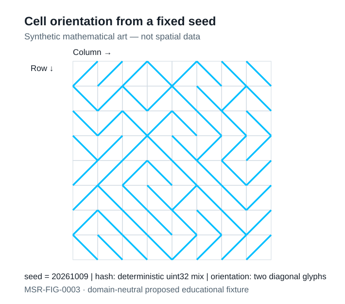

MSR-SKILL-SR-001 · MSR-FIG-0003 — A domain-neutral mathematical learning fixture, not measured environmental data or an infrastructure simulation.
Explore seven original representations related to Chapter 10 of The Book of Shaders. Pseudorandom-looking shading is deterministic under a fixed seed and does not establish a statistically validated physical uncertainty model.

Checking local WebGL2 support. Static SVG remains available if rendering fails.
Cell decomposition: i=floor(s·x), f=s·x−i; hash output: 24 most significant bits from a deterministic uint32 mixing function. Distribution exercise: y=u^γ, γ>0, with a theoretical CDF derived only under an ideal uniform input. Spatial interpolation: q(t)=3t²−2t³. Floating-point GPU implementations are not equivalent to proof or calibrated measurements.